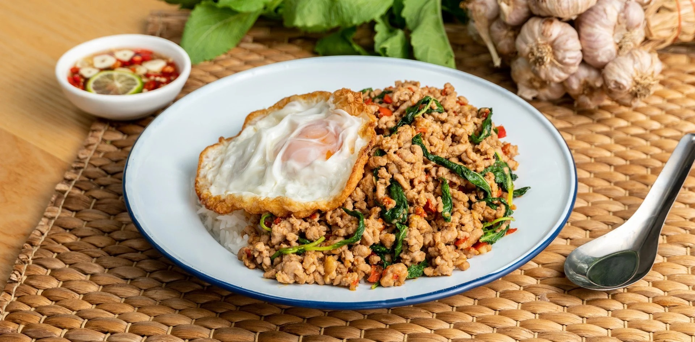
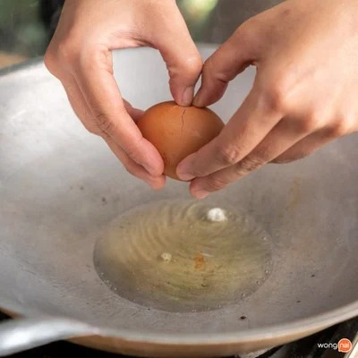
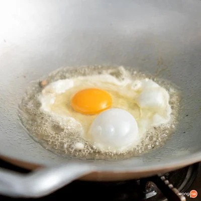
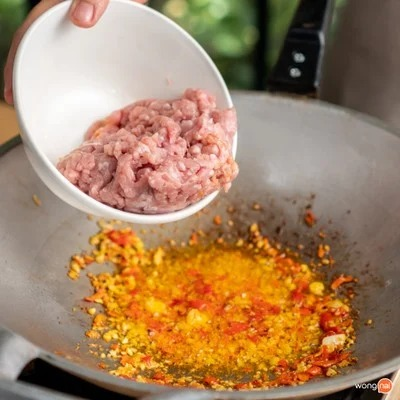
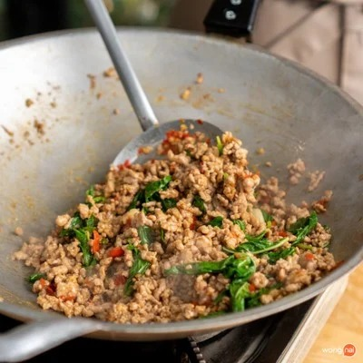
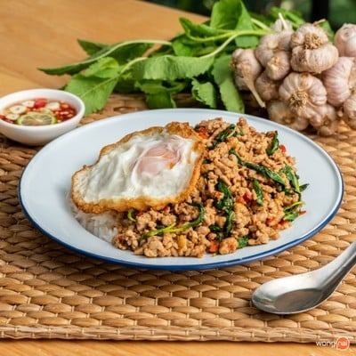

ผัดกะเพราหมูสับไข่ดาว

ส่วนผสม
- หมูสับ 300 กรัม
- ใบกะเพรา 50 กรัม
- พริกแดงจินดา 1 ช้อนโต๊ะ
- กระเทียม 1 ช้อนโต๊ะ
- ซอสหอยนางรม 1 ช้อนโต๊ะ
- น้ำปลา 1 ช้อนโต๊ะ อ่านต่อได้ที่
- ซอสมะเขือเทศ ตามชอบ
- น้ำตาลทราย 1 ช้อนชา
- น้ำมัน (สำหรับผัดกะเพรา) 1 ช้อนโต๊ะ
- ไข่ไก่ 1 ฟอง
- น้ำมัน (สำหรับทอดไข่ดาว) ½ ถ้วยตวง
ขั้นตอนการทำผัดกะเพรา
- ตั้งกระใส่น้ำมันรอให้ร้อนจัด ค่อยตอกไข่ไก่ลงไปทอดจนไข่ดาวกรอบ ตักขึ้นพักไว้ให้สะเด็ดน้ำมัน
- ค่อย ๆ ตอกไข่ไก่ลงไป

- ทอดจนไข่ดาวกรอบ

- ตั้งกระทะใส่น้ำมันให้พอร้อน แล้วใส่กระเทียม และพริกแดงจินดาลงไปผัดจนส่งกลิ่นหอม จากนั้นใส่หมูสับลงไปผัด
- เมื่อหมูเริ่มสุกให้ปรุงรสด้วย ซอสหอยนางรม น้ำปลา และน้ำตาลทราย ผัดจนทุกอย่างเข้ากันดี จากนั้นใส่ใบกะเพราลงไปผัดให้สลดลงเล็กน้อย
- ใส่หมูสับลงไปผัดกับลกระเทียม และพริกแดงจินดา

- ใส่ใบกะเพราลงไปผัดให้สลดลงเล็กน้อย

- ตักข้าวสวยร้อน ๆ ใส่จานราดด้วยหมูสับผัดกะเพราหมูสับ โปะด้วยไข่ดาวกรอบ ๆ เสิร์ฟพร้อมน้ำปลาพริก เพียงเท่านี้เราก็จะได้เมนูผัดกะเพราเด็ด ๆ ที่ทำกินเองได้แล้ว!
- จัดเสิร์ฟ “ผัดกะเพราหมูสับไข่ดาว” พร้อมน้ำปลาพริก

- กิน “ผัดกะเพราหมูสับไข่ดาว” กันดีกว่า!
Home